Abstract
This writeup studies images as combinations of spatial frequencies. Low frequencies carry smooth structure and broad color changes, while high frequencies carry edges, texture, and fine detail. By explicitly separating those bands, we can detect edges, sharpen images, create hybrid perceptual effects, and composite images more smoothly.
The investigation progresses from local derivative filters to frequency-domain interpretation, then to stack-based blending. Each stage uses the same core idea: filtering is a way to decide which visual scale should be emphasized, suppressed, or blended.
Finite Differences and Derivative of Gaussian
The first experiment computes image derivatives with finite difference filters. With Dx=[1,−1] and Dy=[1,−1]T, convolution gives approximate horizontal and vertical rates of change. The gradient magnitude is then thresholded into an edge map.
Raw finite differences are very sensitive to noise because differentiation amplifies high-frequency variation. To reduce this, I first smooth the image with a Gaussian filter Gσ, then differentiate. By associativity of convolution, this two-step process is equivalent to convolving once with derivative-of-Gaussian filters.
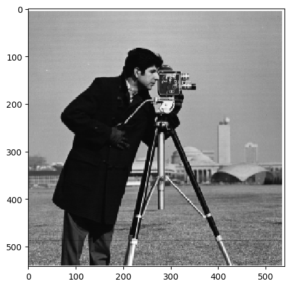
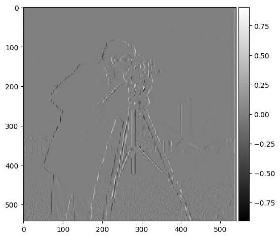
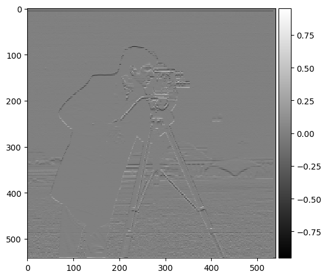
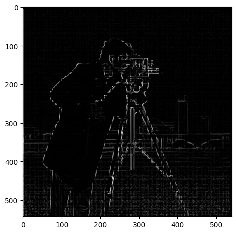
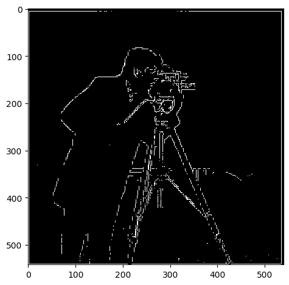
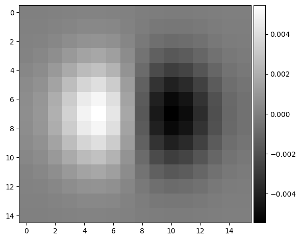
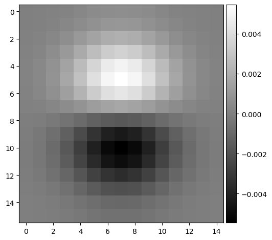
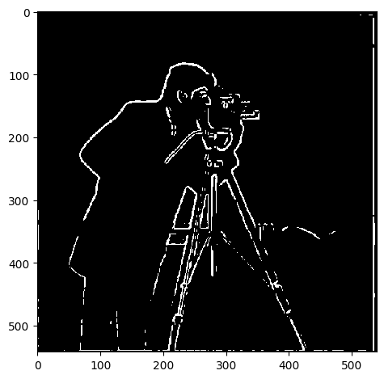
Sharpening as High-Frequency Amplification
Unsharp masking sharpens an image by extracting high frequencies and adding them back to the original. A blurred version I*Gσ acts as the low-pass component, and the detail layer is I−I*Gσ. The sharpened image is:
Increasing α makes edges and texture more prominent, but too much high-frequency amplification introduces unnatural halos and exaggerates noise. The Eiffel Tower test shows a second limitation: if a blur has already destroyed high-frequency information, sharpening can improve perceived contrast but cannot fully recover the original detail.

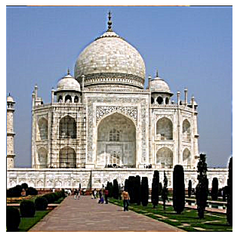
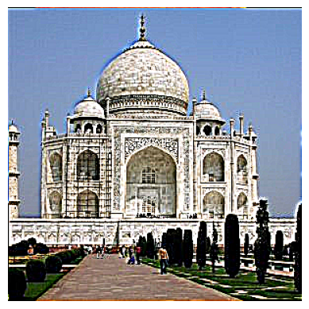
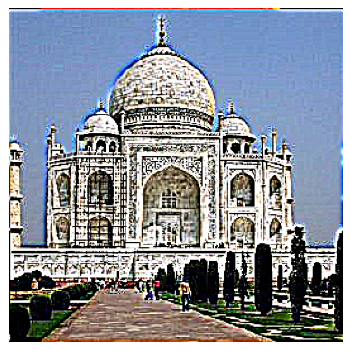
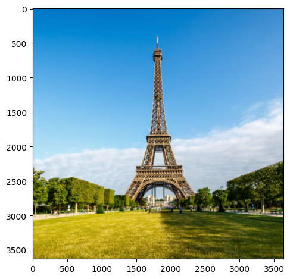
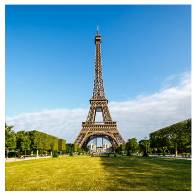
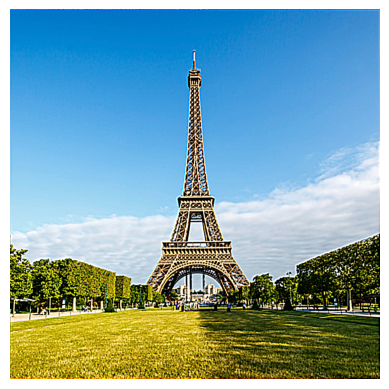
Hybrid Images and Fourier Interpretation
Hybrid images combine the high-frequency content of one image with the low-frequency content of another. Up close, the high frequencies dominate perception; from farther away or at smaller display size, the low frequencies dominate.
The Nutmeg/Derek example worked because the subjects had compatible alignment and different frequency roles. The fork/spoon attempt was less successful: similar background colors and weak high-frequency separation made the fork visually disappear under the spoon's low-frequency structure. That failure is useful because it shows that hybrid images need both geometric alignment and a meaningful frequency split.


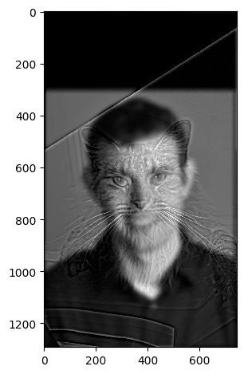
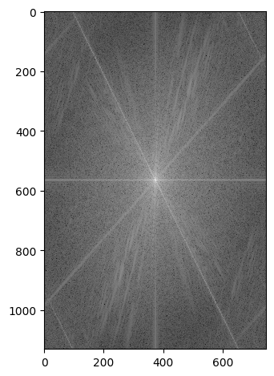
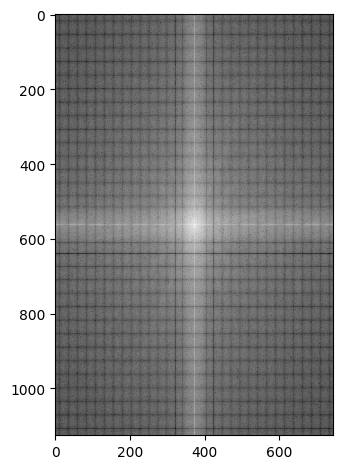
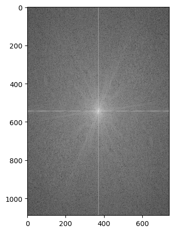
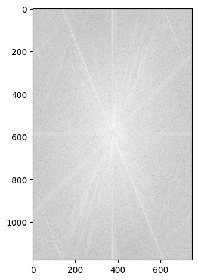
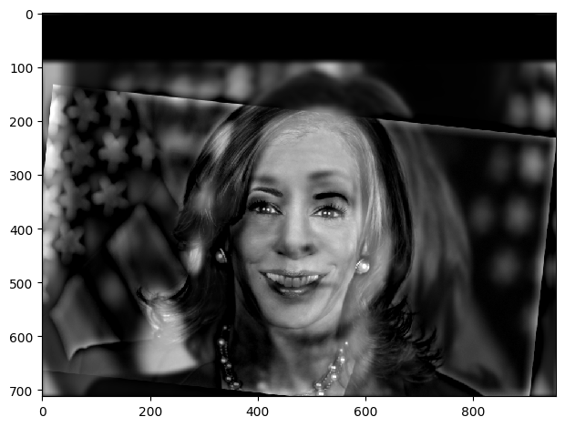
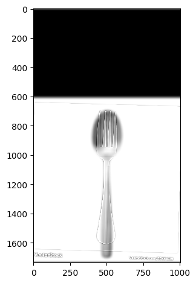
Gaussian and Laplacian Stacks
A Gaussian stack stores progressively smoothed versions of an image without downsampling. A Laplacian stack stores the band-pass residuals between adjacent Gaussian levels. If Gi is the image blurred at level i, then:
The Laplacian stack separates visual content by scale. This is useful for blending because a hard mask should not be applied equally at every frequency. Low frequencies need broad transitions, while high frequencies can transition more sharply.
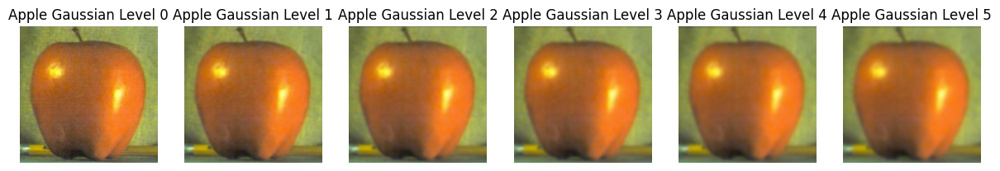
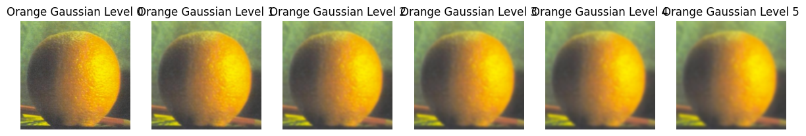
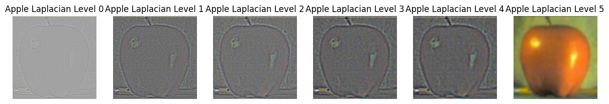
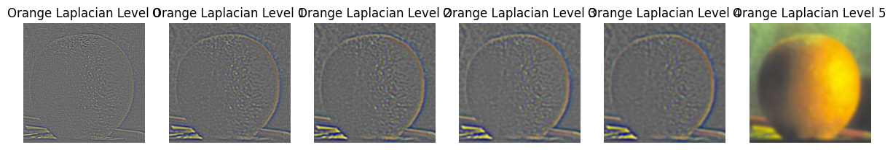
Multi-Resolution Blending Results
For multi-resolution blending, I constructed Laplacian stacks for both source images and a Gaussian stack for the mask. At each level, the mask chooses a smoothly varying mixture of the two band-pass images:
The final image is reconstructed by summing the blended Laplacian levels. This produces smoother transitions than directly cutting and pasting pixels, especially when the mask is blurred at coarse scales.


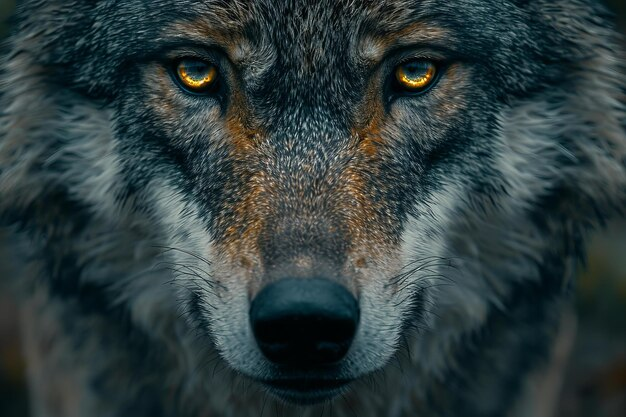
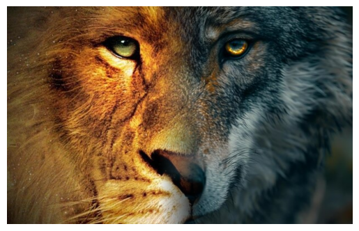
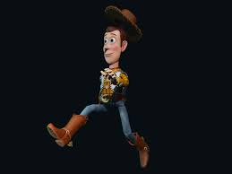
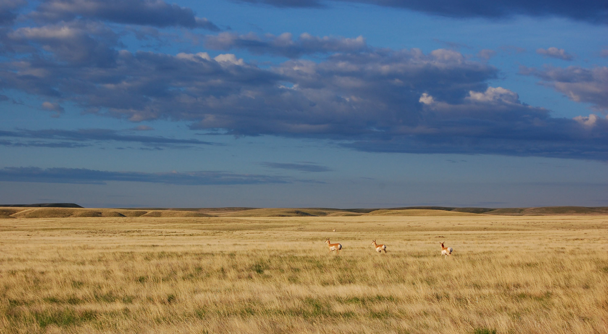
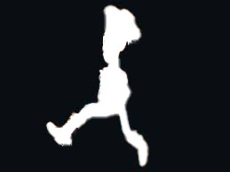
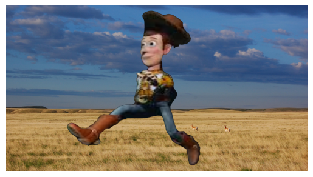
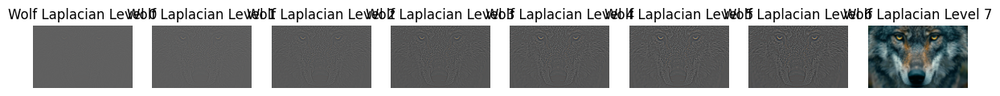
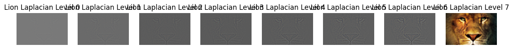
Additional Implementation Notes
A subtle implementation detail in the filtering experiments is that convolution changes the interpretation of image boundaries. If a derivative filter is applied directly at the edge of an image, the missing pixels outside the image can create artificial high gradients. Padding strategy therefore matters: zero padding can introduce dark borders, while reflected or replicated padding better preserves local continuity. In these experiments, I treated the visual comparison as the main diagnostic and used consistent filtering choices across each set of outputs so the differences between raw finite differences, Gaussian smoothing, and derivative-of-Gaussian filtering were attributable to the filter design rather than inconsistent boundary behavior.
For thresholded edge maps, the threshold is not an intrinsic property of the image; it is a design parameter that trades recall for precision. A low threshold includes faint boundaries but also preserves noise, while a high threshold produces cleaner edges but can remove real low-contrast structure. This is why the derivative-of-Gaussian result is important: smoothing first changes the distribution of gradient magnitudes so a threshold can separate coherent edges from noise more reliably.
The hybrid-image experiments also depended heavily on alignment before filtering. If two images are even slightly misregistered, the high-pass layer creates doubled edges and the low-pass layer creates an incompatible global shape. For faces, I chose inputs with comparable scale and central placement. For object hybrids, the fork/spoon failure showed that shared background tone can overpower the high-frequency object, especially when one object has thin geometry and the other has a broad low-frequency silhouette.
For the multi-resolution blends, the reconstruction is effectively a sum over blended frequency bands. This is why the method handles custom masks better than direct alpha compositing: the coarse bands carry broad illumination and color transitions, while fine bands carry local edge detail. When the mask is smoothed in the Gaussian stack, each band receives a transition width appropriate to its scale. The Woody-in-the-plains result is a good example because the mask shape is irregular and would show obvious cut edges under a single-resolution blend.
Another useful way to frame the whole study is as repeated use of linear operators. Finite differences, Gaussian smoothing, high-pass extraction, and Laplacian stack construction are all convolutional operations, so they compose predictably. That lets one implementation detail carry across several experiments: once the image is represented as filtered components, the same reconstruction logic can be used for sharpening, hybridization, or blending. The main difference is which components are amplified, suppressed, or mixed with another image.
Technical Takeaways and Future Work
The throughline is that many image operations are easier to reason about when stated as frequency manipulation. Derivatives emphasize high frequencies, Gaussian filters suppress them, unsharp masking amplifies them, and Laplacian stacks isolate them by scale.
Future work would add interactive cutoff selection, automatic alignment before hybrid-image generation, and exposure/color normalization before blending.